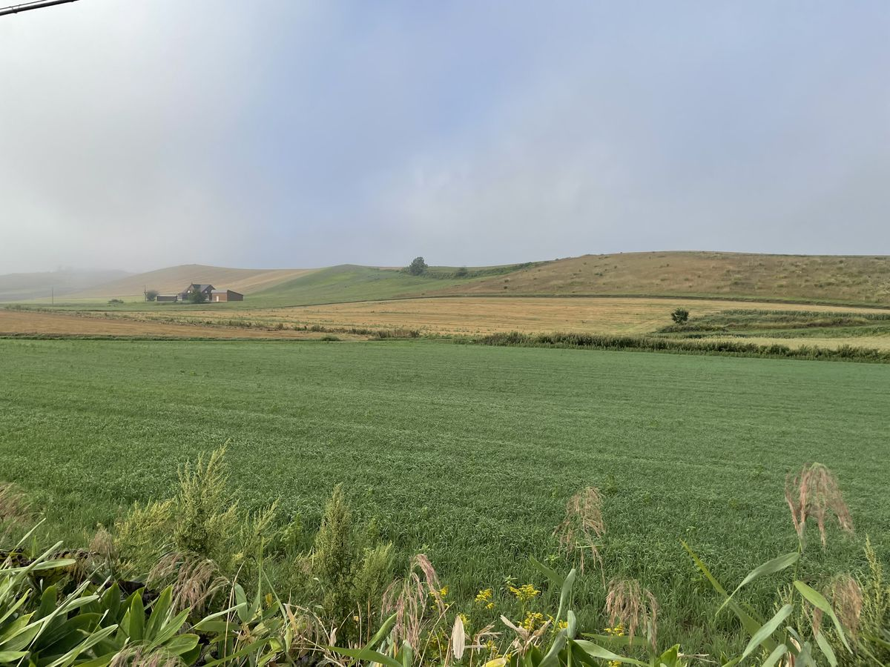

Story
いつか住みたい町に、できることを
家族とひと月、美瑛で暮らすように過ごしたことがあります。 毎朝丘を歩くうちに、この土地がすっかり好きになりました。いつか住みたい、と本気で思っています。
滞在中、毎晩のように考えていたのは「明日の朝、丘に霧は出るだろうか」ということでした。 天気予報はある。でも、それに答えてくれるものはどこにもありませんでした。 青い池の色も、麦の色づきも同じです。
大好きなこの町と、これから訪れる人のために、何かできないだろうか—— そう考えて作ったのが、このサイトです。
Policy
データで案内する理由
私は美瑛の住人ではありません(いつか、と思ってはいますが)。 だから「地元の勘」では案内できない代わりに、気象データと計算式で案内することにしました。
スコアの計算式はすべて公開しています。 外れたら係数を直す。その繰り返しで、このサイトは少しずつ賢くなっていきます。
Author
運営者
本業のかたわら、3Dプリントとアプリ開発の mono labo という屋号で「これ、なんでないんだろう」というものを作っています。このサイトはその美瑛版です。
美瑛の写真は Instagram @biei_explorer に載せています。 スコアの的中報告や「今日の青い池はこうだった」という写真はDMで大歓迎です——係数調整の材料になります。
Promise
このサイトの約束
- 非公式の個人サイトです。美瑛町・観光協会とは関係ありません
- スコアは気象条件からの推定であり、実際の見え方・安全を保証しません。登山や冬の移動は公式情報でご判断ください
- 畑は農家さんの仕事場です。このサイトを見て美瑛を訪れる方は、畑に立ち入らない撮影をお願いします